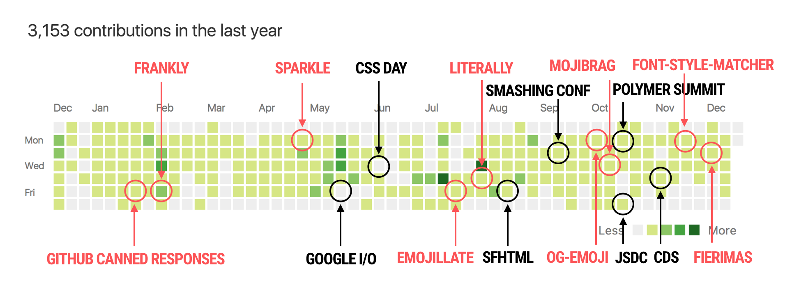
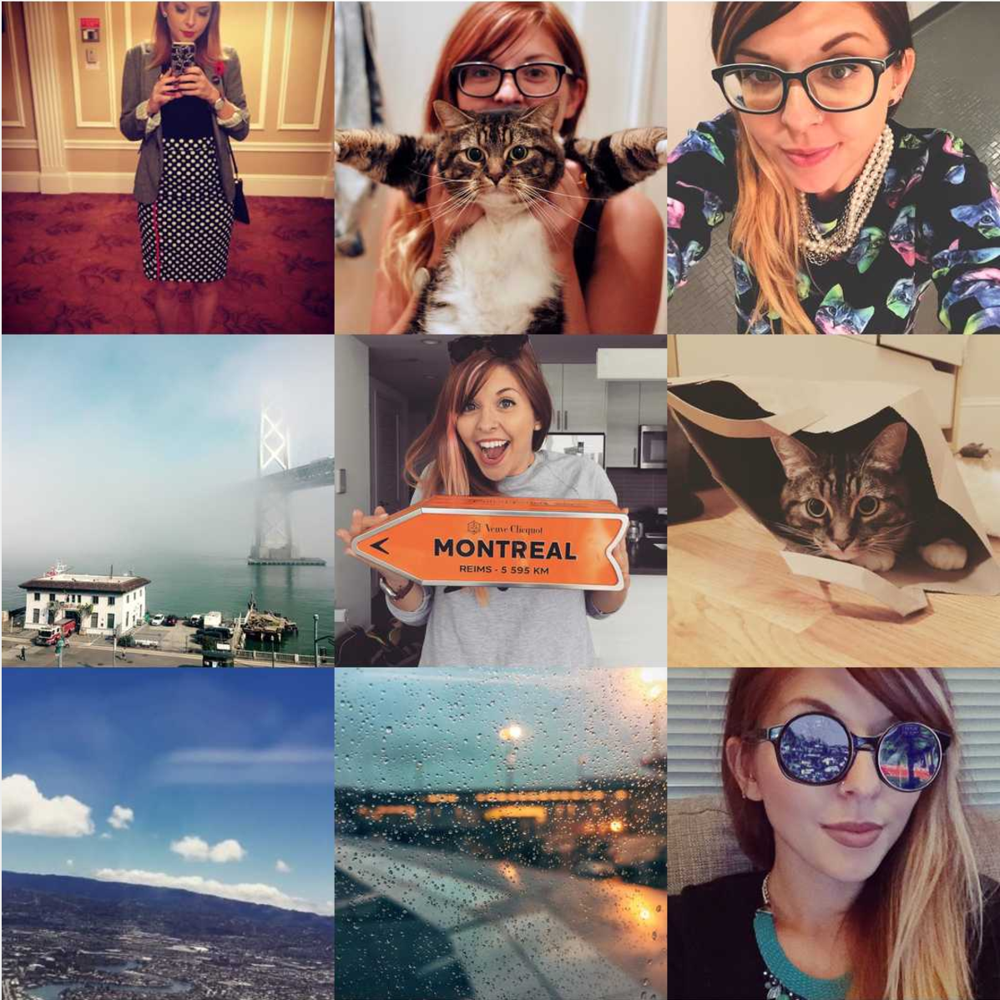

This year was pretty shit, so I wasn’t very keen on doing one of these posts. So many of my favourite musicians died, so many of my favourite countries made mistakes, so many of my favourite people are worried and sad, and I am worried and sad with them. But this year was not the worst year we’ve ever had, or might ever have, so I will tell you the good parts of my year. Maybe you’ll tell me the good parts of yours, and then for 3 minutes we will be less worried and sad, together. ❤️
Here’s life as GitHub saw it. Red text is dumb projects I’ve shipped (you can tell because the names don’t make sense), black text is conferences I’ve spoken at:

When I first looked at this graph I freaked out, because it looks like I did very little until April. Then someone reminded me that I have a job that isn’t writing emoji apps, so I probably just you know, went to work and had normal evening hobbies like playing The Sims and hanging out with my cat. It just takes 4 months before I get antsy.
Here’s life as Instagram saw it. I’ve apparently started taking a lot more selfies, which is either pretty vain or slightly more self confident, or let’s be honest, neither. This is also the first year when I took a lot of photos with my nice camera when traveling, but didn’t have the energy to process or post any of them. Shit happens.

🛫✨🛬
I love traveling almost as much as I love cheese (which is a lot), and I’m so happy about all the places I got to go to this year. I travelled every month that didn’t start with an A. I went to 17 cities and 8 countries. In July, I was at home for a total of 9 days. I am lucky that I work on a team that still tolerates the fact that every couple of months I’ll just be in a different timezone, and I’m worried about when this will end and I’ll have to stand still. My favourite trip was going to Taiwan, which was a country I didn’t expect to love as much as I did.
✌️🐼
I drank over 500 cups of coffee. I learnt about 60 traditional Chinese characters. I’m not trying to learn how to speak the language, I’m just fascinated by the radicals and the writing and the calligraphy and how some words are like a story. I might write a blog post about it one day when I’m less nervous about it. I drew a dinosaur. I still love my job. I still didn’t work on weekends. I still didn’t spoil Star Wars for anybody. I turned 31.
❤️
I hope your year was ok, Internet friends.
(you can read the 2015 year in review if you’re all warm and cozy and don’t want to leave)